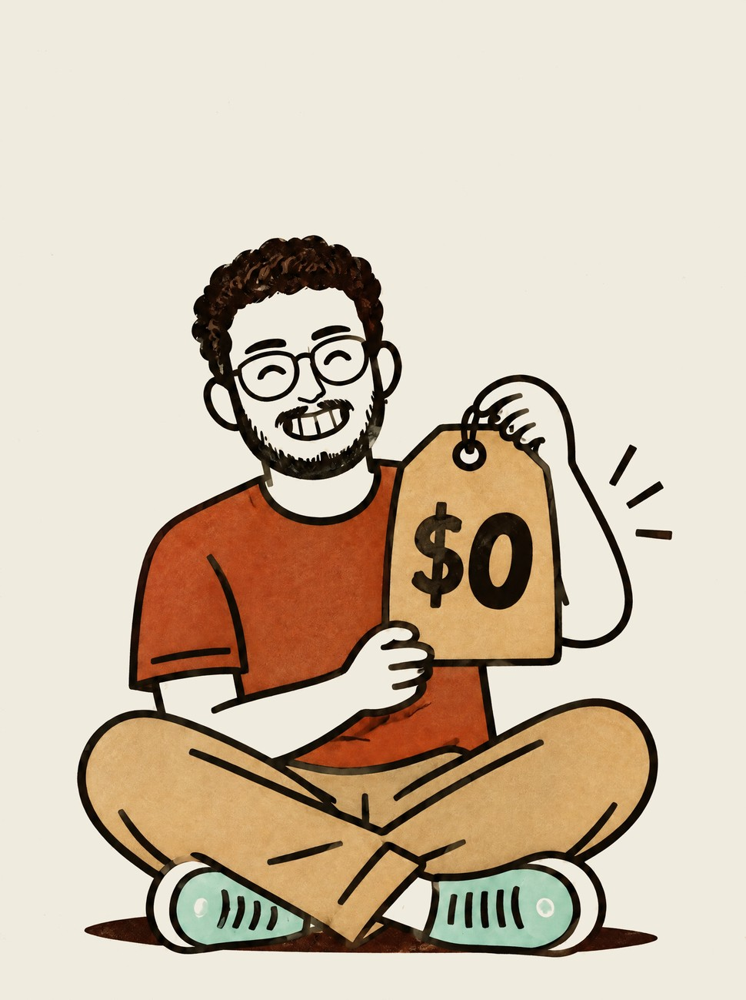
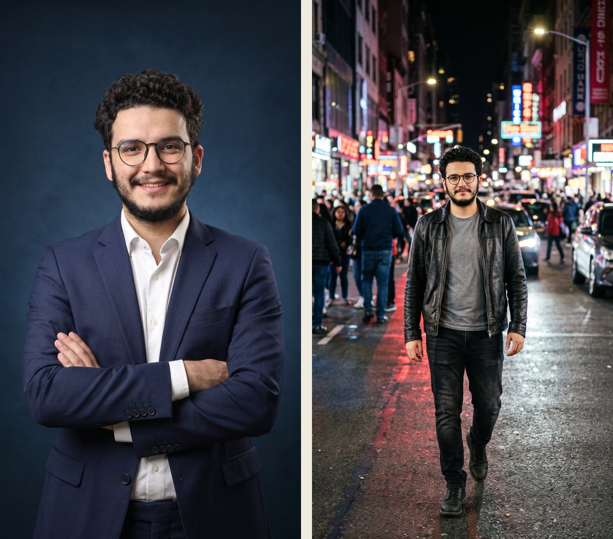
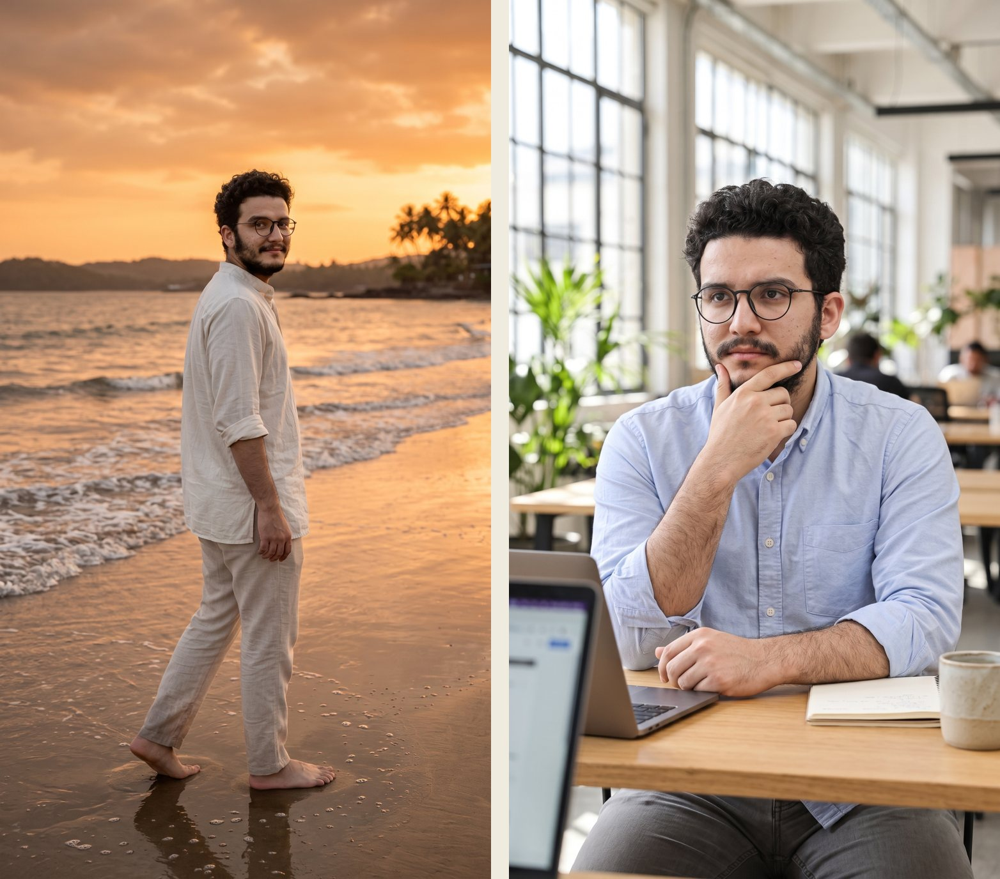
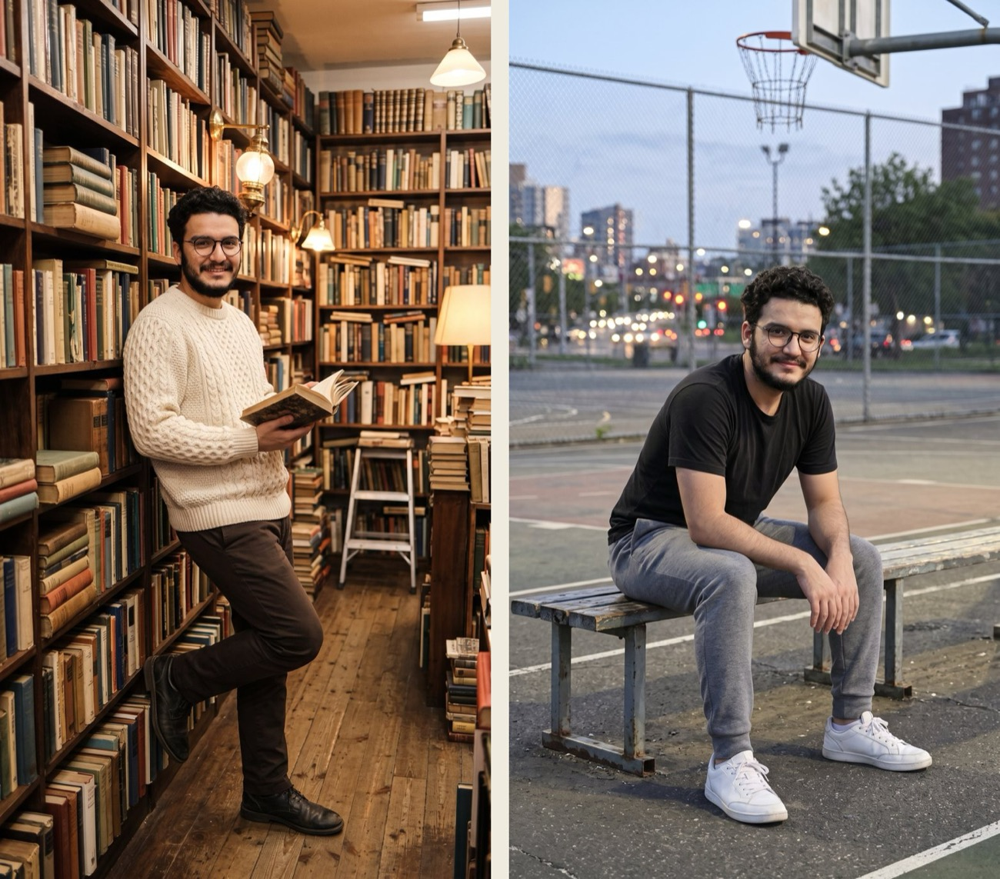

Made in Google Flow — the exact prompt I used for every look, and the one line that keeps your face the same.

Google Flow · checked 21 Oct 2026
Before you start
What you need
A Google account — Flow is for ages 18+ and works in India.
Google Flow — a website, nothing to install: labs.google/flow. A laptop is easiest.
One clear photo of you — the rules are just below.
Credits — my 10 photos used none of mine. Everyone also gets 50 free Flow credits a day.
How it works
You upload one photo, then ask Flow's Agent for one look at a time — a place, an outfit and a pose — with your photo attached every time. Ten prompts, ten looks.
The steps
0Pick the right photo — the face starts here
1Upload it to a new Flow project
2Set images to 9:16 — vertical, made for Reels
3Ask for one look at a time — the 10 prompts below
4Download each look in 2K — sharp enough for full screen
Step 0
Pick the right photo
The #1 complaint on this trend is "my face changed". Most of the time, the photo is why.
Use a photo that is
Front-facingboth eyes visible, looking at the camera
Sharp, well litdaylight from a window is perfect
Unfilteredno beauty mode, no smoothing, no stickers
Just younever other people's photos, and no children
Waist-upor full body, on a plain wall — the looks need your body too
Face clearno sunglasses, no cap covering your face
Why faces drift
A filtered selfie gives Flow a face that isn't quite yours, a side angle hides half of it, and a tiny low-res photo leaves it guessing. Start sharp and straight-on, and the face-lock line does the rest.
1
Upload your photo
Open labs.google/flow → New project → drop your photo into the project.
2
Set images to 9:16
In the Agent chat, open the settings (the sliders icon) → Image generation default → 9:16 → Save. Every look now comes out vertical.
3
Attach your photo to every prompt
Before each prompt: + → pick your photo → Add to prompt. One look per message — when I asked for all 10 at once, Flow failed half of them and the faces drifted.
The fix nobody shows
The face-lock line
Every prompt ends with this line. It's why all 10 looks still look like me.
Add this to the end of every prompt
Use my uploaded photo as the only reference for this man: keep his exact face, hairstyle, beard, round glasses, skin tone and body shape. Do not beautify, slim or change him. Photorealistic vertical 9:16 photo, natural skin texture, 35mm lens. No text.
Make it yours
Not a man?write woman or person instead of man, and her or their instead of his
No glasses or beard?delete them from the line — describe what's really on your face
Traditional outfitdescribe it in the look prompt — a dark green silk saree with a gold border and jhumkas
Your businessput your product in your hand, your shop behind you, your uniform as the outfit
Looks 1 & 2
Mumbai rooftop · Bangalore café
Made in Flow from my one photo — look 1 and look 2.
Look 1 · Mumbai rooftop — then add the face-lock line
Look 1 of 10, one image only. Golden hour on a Mumbai rooftop with the city skyline behind him. He wears a beige linen shirt with rolled sleeves and white trousers. Pose: standing straight and relaxed, hands in pockets, soft smile at the camera, three-quarter length.
Look 2 · Bangalore café — then add the face-lock line
Look 2 of 10, one image only. Inside a cosy Bangalore cafe with warm lights, plants and a wooden table. He wears an olive overshirt over a white t-shirt and tan chinos. Pose: sitting at the table with a coffee cup, laughing, head tilted back a little.
Looks 3 & 4
Studio portrait · Neon street

Made in Flow from my one photo — look 3 and look 4.
Look 3 · Studio portrait — then add the face-lock line
Look 3 of 10, one image only. A clean photo studio with a deep blue backdrop and a soft key light. He wears a tailored navy suit with a crisp white shirt, no tie. Pose: arms crossed, confident smile, looking straight at the camera, waist-up.
Look 4 · Neon street — then add the face-lock line
Look 4 of 10, one image only. A busy city street at night with neon shop signs and soft bokeh lights. He wears a black leather jacket over a grey t-shirt and black jeans. Pose: walking towards the camera mid-stride, full body.
Looks 5 & 6
Goa beach · Coworking space

Made in Flow from my one photo — look 5 and look 6.
Look 5 · Goa beach — then add the face-lock line
Look 5 of 10, one image only. A Goa beach at sunset with a warm orange sky and gentle waves. He wears a white cotton kurta with rolled sleeves and light beige trousers, barefoot on the sand. Pose: looking back over his shoulder at the camera with a half smile, full body.
Look 6 · Coworking space — then add the face-lock line
Look 6 of 10, one image only. A bright modern coworking space with big windows and a laptop on the desk. He wears a light blue oxford shirt with the sleeves rolled up and grey trousers. Pose: sitting at the desk, hand on his chin, thinking, looking slightly off camera, waist-up.
Looks 7 & 8
Diwali night · Himalayan trail
Made in Flow from my one photo — look 7 and look 8.
Look 7 · Diwali night — then add the face-lock line
Look 7 of 10, one image only. A festive Diwali evening with warm fairy lights and marigold garlands behind him. He wears a maroon silk kurta with a gold-embroidered Nehru jacket. Pose: adjusting his watch and smiling, three-quarter length.
Look 8 · Himalayan trail — then add the face-lock line
Look 8 of 10, one image only. A Himalayan mountain trail at sunrise with pine trees and misty peaks. He wears a dark green puffer jacket, cargo trousers and hiking boots, a backpack on one shoulder. Pose: side profile, looking into the distance, full body.
Looks 9 & 10
Old bookshop · Basketball court

Made in Flow from my one photo — look 9 and look 10.
Look 9 · Old bookshop — then add the face-lock line
Look 9 of 10, one image only. An old bookshop with tall wooden shelves full of books and warm lamp light. He wears a cream cable-knit sweater and dark brown trousers. Pose: leaning against a bookshelf with one foot up, holding an open book, smiling, full body.
Look 10 · Basketball court — then add the face-lock line
Look 10 of 10, one image only. An outdoor basketball court in the evening with city lights behind the fence. He wears a black athletic t-shirt, grey joggers and white sneakers. Pose: sitting on a bench, leaning forward with elbows on his knees, smiling at the camera, full body.
What it cost me
10 photos → 0 credits
My Flow credit counter stayed at 1,050 the whole time.
Credits and downloads — checked 21 Oct 2026
My accountGoogle AI Pro (1,000 credits a month). The 10 photos didn't use any of them
Everyone50 free Flow credits a day, with or without a subscription (Google's Flow help)
Download⋮ on each look → Download → 2K Upscaled (1536 × 2752) — free
4Kneeds a higher plan — 2K is plenty for Reels
From Flow's credits page and my own account. Google changes these — check your own counter.
Good to know
Before you post
"Failed"Flow sometimes fails a look — you're not charged. Just send the same prompt again.
FiltersFlow filters uploaded photos of people. Use a clearer photo of yourself — never someone else's, never a child's.
Watermarkeverything Flow makes carries an invisible SynthID mark; Google also adds a visible one for some users in India.
Client workGoogle says it won't claim ownership of what you make — read Flow's terms first.
AI labelthese are AI photos of you — turn on Instagram's AI label when you post them.
 @theabhaychopraFree guide
@theabhaychopraFree guide